- Calculus One
- limit of sinx / x
- Derivative
- Extreme values
- Chain Rule
- Derivatives of Transcendental (Trigonometric) Functions
- Derivatives in the Real World
- Optimization
- Linear Approximation
Calculus One
limit of sinx / x
f(x) = sinx / x , 求 lim x→0
f(1) = 0.8414... f(0.1) = 0.998... f(0.01) = 0.99998... ... f(0.000001) = 0.9999999999 ...
Is the limit 1 ?
It's just a idean, we don't yet have a rigorous argument.
Here's a sketch of a more rigorous argument that the limit of sinx/x , as x approaches 0 , is equal to one.
cosx < sinx/x < 1
is true if x close to 0 but not 0.
Squeeze theorum
g(x)≤f(x)≤h(x) , x near a
lim g(x) = lim h(x) = L
then lim f(x) = L
limit of product
if limx→af(x) = L ,
limx→ag(x) = M , then
limx→a(f(x)·g(x)) = L·M
limx→3 x/(x-3)
我们不应该除以0， 实际上我们也并没有除以0. 我们实际上只是除以了一个接近0的数。而当我们除以一个接近0的数的时候，会发生什么呢？ 如果分母是一个很小的正数，会得到一个很大的正数，如果分母是接近0的负数，会得到一个很大的负数。 这意味着该极限应该 既接近于 很大的正数，又接近一个很大的负数。这个数不可能接近任何固定的值。
注意：这里分子极限为3， 根前面的 sinx / x 不一样， sinx/x 是 0/0型极限。
limx→1 (x²-1)/(x-1) = limx→1 (x+1)(x-1)/(x-1) = limx→1 (x+1)
PS. (x+1)(x-1)/(x-1) and (x+1) not the same function, 一个在 x=1 处 没定义， 一个在 x=1处有定义。 But the limit doesn't care. 极限只取决于 1 附近的函数值。 而在 1附近，这两个函数实际上是一样的。
Continuity
One-Sided Limit:
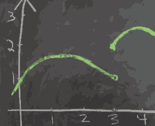
- If limx→a⁺f(x) != limx→a⁻f(x) , then limx→af(x) does not exist.
- if limx→a⁺f(x) = limx→a⁻f(x) = L, then limx→af(x) = L .
Continuous:
f(x) is continuous at a , means that input near a are sent to outputs near f(a).
more precise :
- f(x) is continuouse at a means that limx→af(x) = f(a). That is:
- f(x) is defined at x=a
- limx→af(x) exists
- limx→af(x) = f(a)
Intermediate Value Theorem
- Suppose f(x) is continuous on [a,b] , and y is between f(a) and f(b).
- Then , there is an x between a and b , so that f(x) = y .
- 既： [f(a), f(b)] 之间随机选取一个值 y, 应该存在对应的 x ，使得 f(x) = y.
How to approximate √2 ?
- use intermediate value theorem , to try and find x, so that f(x) = x² - 2 = 0
Infinity
Why is there an x so that f(x) = x
- f(x) cts on [0,1], 0 ≤ x ≤ 1 ; Then there is an x , 0 ≤ x ≤ 1 , and f(x) = x.
- 称这个点 (x, f(x)) 为函数的不动点
Proof:
- g(x) = f(x) - x is cts
- g(0) = f(0) - 0 ≥ 0
- g(1) = f(1) - 1 ≤ 0
- by IVT , find x , so that g(x) = 0, that is f(x) - x = 0 => f(x) = x.
应用：
- f(x) = cosx
- 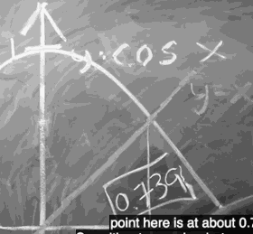
What means limx→af(x) = ∞ ?
- f(x) is as large as you like , if provide x is close enough to a.
- 极限不存在 case
- 极限无穷大
- 左右极限不相等
- 在正负无穷之间来回震荡
- 极限无穷大 是 极限值收敛于无穷。但左右极限不等、震荡仍判定为极限不存在。
What means limx→∞f(x) = L ?
f(x) is as close as you want to L , provided x is large enough.
求 limx→∞ 2x/(x+1)
- 这里无法再使用 商的极限法则，因为分子分母的极限都不存在
- 但是可以 通过 分子分母都 乘上 1/x 来求解， 结果为 2. ( 测试：代入 1000， 10000 ，其结果接近2 )
- x→∞ ,∞/∞型极限， 算法中 big O的思想
Derivative
What are derivatives
definition
The derivative of f at the point x is defined to be :
其他等价的定义：
, or 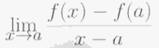
- If the derivative of f exists at x , we say that the function is differentiable at x.
- If the derivative of f exists at x , whenever x is between a and b, then we say that f is defferentiable on (a,b).
The derivative of f at the point x , is written as f'(x).
- 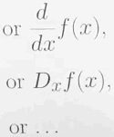
Derivative is slope !
Why is f(x) = |x| not differentiable at x =0 ?
When I say a function is differentiable , what I really mean is that when I zoom in, the function looks like a straight line, but not f(x) = |x| .
f'(0) = limx→0 |h|/h , DNE.
- Why should you care about differentiable function at all ?
- If a terrible looking function is differentiable , if I zoom in on some point, the thing looks like a straight line.
- Calculus is all about replacing the curved objects that we can't understand with straight line , which we have some hope of understanding.
How does wiggling x affect f(x) ?

f'(x) = 3x , f(2) = 4, f(2.01) = ?
f(2.01) = f(2) + 0.01·f'(2) = 4 + 0.01·6 = 4.06.
Why would I care to find derivatives ?
Why is sqrt(9999) so close to 99.995?
- √9999 = √(10000-1) ≈ √10000 - 1·(derivate at 10000) = 100 - 1· 1/(2·100) = 100 - 0.005 = 99.995
What information is recorded in the sign of the derivative ?
f(x+h) ≈ f(x) + h·f'(x)
It means that if the sign of f'(x) is negative , f(x+h) is decreasing , otherwise it is increasing.
How do differentiability and continuity relate ?
Why is a differentiable function necessarily continuous ?
- Theorem : if f is differentiable at a , then f is continuous at a.
- 可微必(原)连续
- Proof:
- if f'(a) exist , then limx→a (f(x)-f(a)) = 0·f'(a) = 0
- that means f(x) = f(a) , while limx→a , it is the definition of continuity.
可微分、连续与可导的关系？
- 一元函数：
- 可导必 连续，连续推不出可导，
- 可导与可微等价。
- 多元函数：
- 可偏导与连续之间没有联系，也就是说可偏导推不出连续，连续推不出可偏导。
- 可微必可偏导，可微必连续，可偏导推不出可微，但若一阶偏导具有连续性则可推出可微。
- 某点处偏导数存在与否与该点连续性无关.（即使所有偏导数都存在也不能保证该点连续）.
- 偏导数存在是可微的必要条件,但非充分条件（可微一定偏导数存在,反之不然）；
- 偏导数存在且偏导数连续是可微的充分条件,但非必要条件（偏导数存在且(导)连续一定可微,反之不然）.
How do I find the derivative ?
d/dx xⁿ = n·xⁿ⁻¹
How do I differentiate a product ?
d/dx (f(x)·g(x)) = f'(x)·g(x) + f(x)·g'(x)
d/dx ((1+2x)·(1+x²))
= 2·(1+x²) + (1+2x)·2x
= 2 + 2x² + 2x + 4x²
= 2 + 2x + 6x²
Why is it true ?
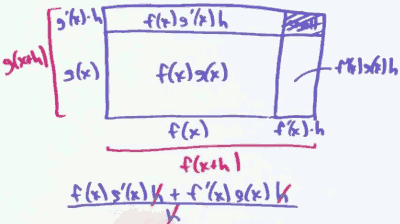
How do I differentiate a quotient ?
Let h(x) = f(x)/g(x).
If g(a) ≠ 0 , and
f and g are differentiable at a , then
下乘上导，减上乘下导，除以 下下
d/dx is just a function
Extreme values
How can I find extreme values ?
- If either f'(c) does not exist , or f'(c) = 0 , call c a critical point of f.
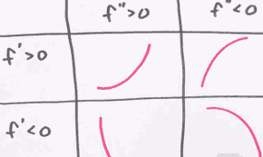
How do I differentiate eˣ ?
f(x) = 1 + x + x²/2 + x³/6 + x⁴/24 + ... = eˣ
Chain Rule
What is the Chain Rule
- d/dx g(f(x)) = g'(f(x))·f'(x)
- d/dx g(f(x)) : change in g(f(x)) / change in x
- g'(f(x)) : change in g(f(x)) / change in f(x)
- f'(x) : change in f(x) / change in x
How do I find the tangent line to a curve ?
- x³ + y³ - 9xy = 0

- This in NOT the graph of a function, it's really a relation , a equation.
x³ + y³ - 9xy = 0
3x² + 3y²·dy/dx - 9y - 9x·dy/dx = 0
3x² - 9y + ( 3y² - 9x )·dy/dx = 0
( 3y² - 9x )·dy/dx = - 3x² + 9y
dy/dx = (- 3x² + 9y) / ( 3y² - 9x )
How do I find the derivative of an inverse function ?
- What is inverse function ?
- f⁻¹(f(x)) = f⁻¹(y) = x
- inverse function 就是 互换了 x轴 和 y轴
- 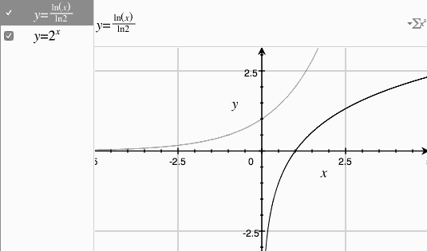
- What is the derivative of an inverse function ?
- since derivate is just the slope, and inverse function exchange the x axis and y axis, so
- if the derivative of f(x) is m , then the derivative of f⁻¹(y) = 1/m. 注意：这里 x，y并不相等
f(x) = x²
=> f'(x) = 2x
f⁻¹(x) = √x
=> (f⁻¹)'(x) = 1/f'( f⁻¹(x) ) = 1/f'(√x) = 1/(2√x)
What is the derivative of log ?
eˣ = y
y = logx
eˣ⁺ʸ= eˣeʸ
log(ab) = loga + logb // this is a big reason why we care so much about logs
more properties of log function
f(x) = eˣ
(f⁻¹)'(x) = 1/f'( f⁻¹(x) )
the neat thing is f'(x)==f(x)
= 1/f( f⁻¹(x) )
= 1/x
f(x) = logₐx
f'(x) = d/dx( logx/loga )
since loga is constant
= 1/loga · d/dx(logx)
= 1/loga · 1/x
= 1/( xloga )
f(x) = 2ˣ , 我们知道了怎么求 eˣ,logx 的 导数
f'(x) = d/dx( eˡºᵍ² )ˣ
= d/dx e⁽ˡºᵍ²⁾ˣ
apply chain rule
= e⁽ˡºᵍ²⁾ˣ·log2
= 2ˣ·log2
What is logarithmic differentiation ?
求 y'
You definitely can useproduct rule, power rule , chain rule, quotient rule ... to solve this problem.
But use log can make things tricky : 使用 log 来简化一大堆的 指数
logy = 5log(1+x²) + 8log(1+x³) - 7log(1+x⁴)
now differentiate it

How can I multiply numbers quickly ?
2038074743
x 4222234741
= ?
- Quarter Squares
- a·b = (a+b)²/4 - (a-b)²/4
- eg. 3·2 = (3+2)²/4 - (3-2)²/4 = 6
| n | n²/4 |
|---|---|
| 1 | 1/4 |
| 2 | 1 |
| 3 | 2 + 1/4 |
| 4 | 4 |
| 5 | 6 + 1/4 |
- Admittedly, people don't talk too much about quarter squares nowadays.
- What you've probably heard a lot more about is logaritms.
- log(a·b) = loga + logb
- you can this log to multiply very quickly, provide you have a log table.
How do I justify the derivative rules ?
justify the power fule
- negative n
- d/dx (1/x) = -1/x²
- d/dx (x⁻ⁿ) = -n·x-(n+1)
- works as well
logarithms help to prove the product rule
f(x)>0, g(x)>0
log(f(x)·g(x)) = log f(x) + log g(x)
differentiate
1/(f(x)g(x))·d/dx( f(x)g(x) ) = 1/f(x)·f'(x) + 1/g(x)·g'(x)
d/dx( f(x)g(x) ) = g(x)·f'(x) + f(x)·g'(x)
How do we prove the quotient rule
- use chain rule
Derivatives of Transcendental (Trigonometric) Functions
What is Trigonometric ?
cscθ = 1/sinθ
secθ = 1/cosθ
tanθ = sinθ / cosθ
cotθ = 1/tanθ
How can I differentiate trig functions ?
What is the derivative of sin and cos?
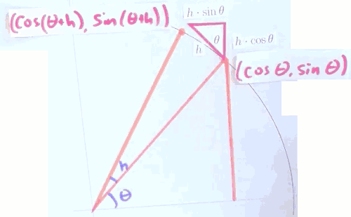
- θ increased by h
- point ( cosθ, sinθ ) moved to ( cos(θ+h) , sin(θ+h) )
- sin(θ+h) = sin(θ) + h·cosθ
- sinθ increased by h·cosθ
- cos(θ+h) = cos(θ) - h·sinθ
- cosθ decreased by h·sinθ
- sin(θ+h) = sin(θ) + h·cosθ
conclusion
- d/dθ sinθ = cosθ
- d/dθ cosθ = -sinθ
if you differentiate sine 4 times, you get back to itself.
What is the derivative of tan x ?
- use quotient rule
d/dθ tanθ = ( cosθcosθ - sinθ (-sinθ) )/cos²θ = 1/cos²θ = sec²θ
What is the derivative of sin(x²) ?
- chain rule
- d/dθ = cos(x²)·2x
- |sin(x²)| ≤ 1
- cos(x²)·2x can be as large as you like !
What is the derivative of other trig functions ?
| trig func | derivative |
|---|---|
| sinx | cosx |
| cosx | -sinx |
| tanx | sec²x |
| cotx | -csc²x |
| secx | secx·tanx |
| cscx | -cscx·cotx |
How can I differentiate inverse trig function ?
The trig function are not invertible! So we're only going to talk about the inverse of trig functions after we restrict their domain.
| trig function | domain |
|---|---|
| arcsin | [-π/2, π/2] |
| arccos | [0, π] |
| arctan | [-π/2, π/2] |
what is the arcxxx ?
- θ = arccos(1/2) , is just to say that θ is the length of the arc whose cosine is 1/2.
draw picture to help you under stand inverse trig function
What are the derivatives of inverse trig functions ?
- d/dx arcsin x = ?
- let f(x) = arcsin x
- so f(sinx) = x , assuming arcsin is differentiable :
f'(sinx) = 1
f'(sinx)·cosx = 1
f'(sinx) = 1/cosx = 1/√(1-sin²x)
f'(x) = 1/√(1-x²)
>>> from sympy import diff,symbols,asin
>>> x, y, z = symbols('x y z')
>>> diff ( asin(x) ,x )
1/sqrt(-x**2 + 1)
| trig function | derivateive |
|---|---|
| arcsin | 1/√(1-x²) |
| arccos | -1/√(1-x²) |
| arctan | 1/(1+x²) |
What can we learn from the derivatives of trig functions ?
Why do sin / cos oscillate ?
- kind of accelerate = - position
- f''(t) = -f(t)
- the reason why thess function (cos / sin ) are bouncing up and down like this, is because in every case , the function's 2nd derivative is negative its value.
- when the function is positive, the 2nd derivative is negative , pulling it down
- when the function is negative , the 2nd derivative is positive , pushing it back
How can I approximate sin1 ?
- tips 1:
- sin(x) ≈ x , if x is small ( eg.x < 0.4 )
f(x) = sinx , f(0) = 0
f'(x) = cosx , f'(0) = 1
f(0+h) = f(0) + h·f'(0) ≈ 0 + h = h
sin(h) ≈ h
- tips 2:
- sin(2x) = 2·sin(x)·cos(x)
- sin(2x) = 2·sin(x)·√(1-sin²(x))
sin 1/32 ≈ 1/32 = 0.03125
sin 1/16 ≈ 0.0624...
sin 1/8 ≈ 0.12349...
...
sin 1 ≈ 0.84147...
Multiplying Trigonometric Functions with Slide Rules
How can we multiply numbers with trigonometry?
- cosα cosβ = (cos( α + β ) + cos( α - β )) /2
- 0.17 · 0.37 = ? 查表法 again....
Derivatives in the Real World
How can derivatives help with limites ?
L'Hopital's rule
limx→a f(x) = 0
limx→a g(x) = 0
limx→a f(x)/g(x) = limx→a ( f(a) + f'(a)·(x-a) ) / ( g(a) + g'(a)·(x-a) ) = f'(a) / g'(a)
How can L'Hopital Rule help with limits not of the form 0/0 ?
- L'Hopital Rule also works for ∞ / ∞
limx→∞ (2x²+1)/(3x²-x) = limx→∞ 4x / (6x-1) = limx→∞ 4/6 = 2/3
- for 0·∞ , try to transform other forms to "0/0" or "∞/∞"
limx→∞ (sin(1/x)·x ) = limx→∞ sin(1/x) / (1/x) = cos(1/x)·(-1/x²) / (-1/x²) = cos(1/x) = 1
- 1∞
- ∞⁰
- ∞ - ∞
limx→∞ ( √(x²+x) -x ) = limx→∞ ( x·( √(1 + 1/x) -1 ) )
now we get ∞·0 form
= limx→∞ ( ( √(1 + 1/x) -1 )/ (1/x )
now it is 0/0 form , we apply L'Hopital's rule
= limx→∞ 1/(2·√(1 + 1/x)) ·d/dx(1/x) / d/dx(1/x)
= limx→∞ 1/(2·√(1 + 1/x)) = 1/2
summarization
| form | solution |
|---|---|
| 0/0 , ∞/∞ | L'Hopital |
| 0·∞ | ∞ / (1/0) , 0 / (1/∞) |
| 1∞ | e∞·log1 |
| ∞⁰ | e0·log∞ |
| 0⁰ | e0·log0 |
| ∞ - ∞ | ( 1/∞ - 1/∞ ) / (1/∞∞) |
Why shouldn't I fall in love with L'Hopital
- limx→∞ (x+sinx)/x
- if you L'Hopital rule to solve it, you will get limx→∞ (1+cosx) / 1 , that limit does not exist.
- But it indeed has limit :
limx→∞ (x+sinx)/x = limx→∞ (x/x + sinx/x) = 1 + limx→∞sinx/x = 1
- When you're doing those limit problems , don't forget that you can just algebraically manipulate things. There might be an easier way than bring out L'Hopital .
How can derivatives help me to understande rates of change in the real world ?
影子长度的变化速率
- the lamp is 3 meters high
- man is 2 meters high
- man is walking on speed 2meters/second
- what is the changing rate of length of shadow ?
- 4 steps to solve this problem
- draw picture
- list euqation
- differentiate
- solve
(X+S)/3 = S/2
differentiate
1/3·(X' + S') = 1/2·S'
1/3·X' = 1/6·S'
2·X' = S'
amazing? 影子长度变化的速率 是人行走速度的两倍, 与当前灯和人的位置无关
How long until the gray goo destroys Earth ?
- gray goo can converts anything it touches into more of itself
- the rate of growth of this gray goo is proportional to its current size
- f(t) = amount of gray goo
- f'(t) = rate of change of gray goo
- f'(t) = f(t)
- What are the units of the derivative ?
- f(t) in grams
- f'(t) in grams per second
- assume f(0) = 1g
- so what is f(t) ?
- we already known such a function: f(t) = eᵗ
- how much gray goo is there after 10 seconds ?
- f(10) = e¹⁰ ≈ 22 kg
- how long will it take until the entire Earth is converted into gray goo ?
- the mass of the Earth is about 6·10²⁷g
- f(t) = eᵗ = 6·10²⁷g
- t = log(6·10²⁷) = log6 + 27·log10 = 1.8 + 27·2.3 ≈ 63.9 second
Optimization
- What is the extreme value theorem ?
- If a function f is continuous on the closed interval [a,b] , then
- f attains a manimum value
- f attains a minimum value
If optimization is possible, How do I do ?
How do I find the maximum and minimum values of f on a given domain?
- differentiate: f'(x)
- list crit points :
- f'(x) = 0
- x where f not differentiable
- end point :
- domain of x, 区间的边界点
- check limiting behavior
Why bother considering points where the function is not differentiable?
- find max and min value of f(x) = x - |x² - 2x| , on the interval [0,3]
f(x) = ⎧ x - (x² - 2x) , if x² - 2x ≥ 0
⎩ x + (x² - 2x) , if x² - 2x < 0
f'(x) =⎧ 1 - (2x-2) , if x² - 2x > 0 , // no '=' here, because x=2 not differentiable
⎩ 1 + (2x-2) , if x² - 2x < 0
=⎧ 3 - 2x , if x<0 or x>2
⎩ -1+ 2x , if 0 <x <2
- crit points
- f'(x) = 0 : x=1/2
- f not differentiable : x=2
- end point : x=0 , x=2
| x | f(x) |
|---|---|
| 0 | 0 |
| 1/2 | - 1/4 |
| 2 | 2 |
| 3 | 0 |
Why would I want to opimize a function ?
How large can xy be if x + y = 24?
- f(x) = x·(24-x) = 24x -x²
- f'(x) = 24 - 2x = 0
- x = 12
- Arithmetic Mean - Geometric Mean (AM-GM) Inequality
- (a+b)/2 ≥ √(ab)
- with equality iff a==b
Optimization in Action
How large of an object can you carry around a corner?
- break up the stick into 2 pieces , each from a wall to this corner
- the bottom piece has the length: a·cscθ
- the other one has the length: b·secθ
- the length of the whole stick is :
- l(θ) = a·cscθ + b·secθ
- what's the constraint in this problem ?
- 0 < θ < π/2
l(θ) = a·cscθ + b·secθ
l'(θ) = -a·cscθ·cotθ + b·secθ·tanθ
l'(θ) = 0 ?
b·secθ·tanθ = a·cscθ·cotθ
(secθ·tanθ )/(cscθ·cotθ ) = a/b
tan³θ = a/b
tanθ = ∛(a/b)
θ = arctan( ∛(a/b) )
use θ = calculate l(θ)
l(θ) = (a2/3 + b2/3 )3/2
How short of a ladder will clear a fence?
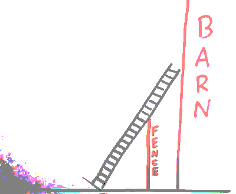
- 需要多长的梯子 ， 才能够到 谷仓？
- 本质上，和上面的 stick 通过 corner 是一样的
Linear Approximation
What is linear approximation?
- I want to understand some graph of a function that's very curved.
- And that's hard to do.
- But, if I zoom in close enough on the functions graph right, if the function's differentiable, then when I zoom in
- that graph looks like a straight line.
- That's the idea of linear approximation , also the key idea of Calculus.
What happens if I repeat linear approximation?
- Problem: f'(x) = f(x) , f(0) = 1
- Goal: f(1)
We can easily get that f(1)=e . But the point here isn't to the say that answer is e. The point is going to be to try to approximate this quantity without actually knowing the value of e.
f(1) ≈ f(0) + 1·f'(0)
= 1 + 1·1 = 2
2 is a terrible approximation but we can do better. If we can do any approximation once, we can do it a bunch of time.
f(0.5) ≈ f(0) + 0.5·f'(0)
= 1.5
f(1) ≈ f(0.5) + 0.5·f'(0.5)
= 1.5 + 0.5·f(0.5) = 1.5 + 0.5·1.5 = 2.25
10 steps are more better ! f(1)
- Euler Method
- the repated linear approximation called Euler Method
- f(h) ≈ f(0) + h·f'(0)
- f(2h) ≈ f(h) + h·f'(h)
- f(3h) ≈ f(2h) + h·f'(2h)
- ...
- the cool thing here is that I'm using linear approximation in each stage ,and then I'm using the information from previous stage not only to approximate the function's value , but also to approximate the function's derivative.
- In the real world peaple don't really use the Euler method so often.
- It's sometimes better not to pick a point which is all the way on the left hand side of the interval .
- sometimes you'll see using the middle point:
f(h) ≈ f(0) + h·f'(h/2)
- sometimes you'll see using the middle point:
- Quiz:
- You are interested in the function f which satisfies the differential equation
- f'(x) = -0.5x² - 0.5f(x) , and which satisfies f(-3) =0 .
- Use repeated linear approximation (otherwise known as Euler's Method) to approximate the value of this function at x=−1 , using a step size of 1/2
>>> reduce( lambda x,y: x + 0.5*( -0.5*y*y - 0.5*x ) , [ 0,-3,-2.5,-2,-1.5 ] )
-3.140625
What does dx mean by itself?
- dx means differential
- dy is change in the linearizatioin of y
- or the linear approximation, or the tangent line aporiximation.
- your dy's had better include a dx.

- y =f(x)
- dy = f'(x)dx
- d(u+v) = du + dv
- d(uv) = (du)v + u(dv)
What is Newton's method?
- The problem: A "nice" function f , nice means differentiable
- Find x so that f(x) = 0
- Now in practice, this is way too much to ask for
- Find x so that f(x) close to 0.
- Find x so that f(x) = 0
- We have already done this , using the Intermediate Value Theorem
- The downside to this bisection method is just speed, it takes a really long time
- So a different method, called Newton's method, is much faster than this bisection trick
- just start by making a potentially bad guess : x₀
- in this case , that's not a very good guess
- draw the tangent line to the curve through that point f(x₀)
- then my next guess will be wherever that tangent line crosses the x axis
- So here would be my next guess x₁
- repeat the process.
We're going to start by thinking about this red line.
- the point slope form Of the red line:
y-f(x₀) = f'(x₀)·(x-x₀)
- Newton's method tells me that I should use that linear approximation to the graph, figure out where the linear approximation crosses the x axis
- So to do that , I'm going to set y = 0
- 0-f(x₀) = f'(x₀)·(x-x₀)
- that'll tell me where the red line crosses the x axis, if I solve this equation for x
0-f(x₀) = f'(x₀)·(x-x₀)
= f'(x₀)·x - f'(x₀)·x₀
f'(x₀)·x₀ -f(x₀) = f'(x₀)·x
assuming f'(x₀) != 0
x₀ - f(x₀)/f'(x₀) = x
- so x₁ is this:
- x₁ = x₀ - f(x₀)/f'(x₀)
- I can now write down the step by step process for Newtons method just using a formula
- Initial guess x₀
- new guess x₁ = x₀ - f(x₀)/f'(x₀)
- x₂ = x₁ - f(x₁)/f'(x₁)
- x₃ = x₂ - f(x₂)/f'(x₂)
- ... xn+1 = xn - f(xn )/f'(xn )
- The problem is that I can't promise you that Newton's method will actually work.
What is a root of the polynomial x^5 + x^2 - 1?
- here's the function where I want to find a root
- f(x) = x⁵ + x² -1
- I want to find some input that makes this function equal to 0
- 没有公式可以求 这个函数的根
- f(0) = -1, f(1) = 1
- So there has to be some input between 0 and 1 where this function's output is equal to 0
- f'(x) = 5x⁴ + 2x
- x₀ = 1
- x₁ = x₀ - f(x₀)/f'(x₀) = 1 - 1/7 = 6/7
- f(x₁) = (6/7)⁵ + (6/7)² -1 ≈ 0.197
- x₂ = x₁ - f(x₁)/f'(x₁) ≈ 0.812
- f(x₂) ≈ 0.014
- x₃ ≈ 0.809
- f(x₃) ≈ 0.000085
- So
- the intermediate value theorem promises me that there is a root
- Newton's method, or this bi-section algorithm permits me to get better and better approximations to that root
How can Newton's method help me to divide quickly?
- What if I wanted to calculate 1/b ?
- Newton's method is really a trick for finding zeroes of a function
- so to approximate 1/b, what I really want to find is a function f , so that f(1/b) = 0.
- There's a ton of different choices that are possible for such a function
- f(x) = 1/x -b
- f'(x) = -1/x²
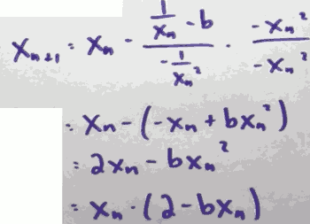
- Then, we'll make this even more concrete. Let's set b = 7
- x₀ = 1/10
- x₁ = 1/10·(2-7·1/10) = 13/100
- x₂ = 13/100·(2-7·13/100) = 1417/10000
- x₃ = 14284777 / 100000000
- so 1/7 ≈ 0.14285...
- This method has name: Newton-Raphson Division
What is the mean value theorem?
- Suppose f is continuous on [a,b] , and differentiable on (a,b) ; then
- there exists c in (a,b) , so that
- f'(c) = ( f(b)-f(a) ) / (b-a)
- here is one interpretation:
- if that function is giving you position , and the input to that function is time
- so the derivative of that function is velocity
- then that formula is saying that your average velocity is achieved , at some point, instantaneously
- ( f(b)-f(a) ) / (b-a) 是平均速度，f'(c) 是瞬时速度
- 在某个时刻，你的瞬时速度等于 (a,b)的平均速度
- 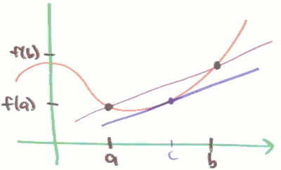
- mean value theorem means the slope of those 2 lines are same.
- The mean-value theorem is often told as a story about somebody driving a car
- At noon, you're in some city A, and at 1 p.m. You're driving your car and you've arrived in a city B, which is 100 miles away from city A.
- the Mean Value Theorem tells you that at some point during your journey, your speedometer said 100 miles per hour.
Why does f'(x) > 0 imply that f is increasing?
- Theorem:
- Suppose f'(x) =0 on open interval , then f is constant on the interval.
- Suppose f'(x) >0 on open interval , then f is increasing.
- Suppose f'(x) <0 on open interval , then f is decreasing.
- using MVT to proof
Should I bother to find the point c in the mean value theorem?
- The power of the mean value theorem lies not in the fact that you can actually go out and compute the value c
- The power lies in the fact, the mean value theorem tells you that it's possible , that you know there's a value of c out there, without you having actually go and find it.